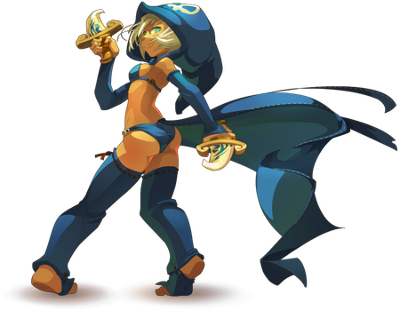
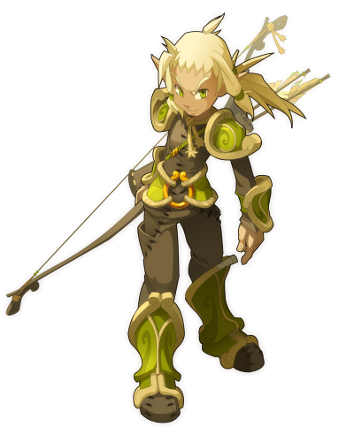

Cliquez sur les tomes pour naviguer
« Ici, il n’y a rien ».Pendant des lustres et lustres, ce fut bien la seule chose à dire du recoin d’Univers dont il est question dans cet ouvrage. Mais ô vénérable lecteur, admirable lectrice, l’as-tu senti, toi aussi ? Certes oui, sinon tu ne te retrouverais pas à lire ces lignes… Intrépide lecteur, lectrice téméraire, tu le devine, tu le sais : l’Histoire est en marche ! Un monde s’apprête à fleurir ici même sous tes yeux ! Mais prend garde toutefois : c’est d’une naissance peu ordinaire dont il s’agit ! Et ceux qui attendent une histoire à papa, une de celles qu’on raconte le soir aux enfants sages, feraient mieux de refermer ce livre. Car ils ne trouveront ici aucune fée exauce-minute, aucune allumeuse de feux d’artifesses (Je vous jure que c’est l’auteur ! Pas moi qui à écrit sa !) Ni d’archer aux attributs superbement moulés (Mais c’est vraiment l’auteur je vous dis !) Et encore moins de preux paladins gavés de testostérone –Pardonnez-moi (Pardonnons-le…), je m’emballe… Les pages qui suivent décrivent la genèse d’un Monde bientôt plongé dans les ténèbres absolues.
Déchirés par des guerres sanglantes. Livré en pâture aux brutes ! Aux rustres Aux barbares ! Voici l’histoire de ce Monde qui tirait sa splendeur d’une demi-douzaines d’œufs, et qui fut précipité dans le chaos à cause d’eux…
Mais, révéré lecteur, sublime lectrice, permet-moi de me présenter : Acidrik Fenlapanse, Maître des divinations et haruspices. En clair ; je lis la passé et l’avenir dans les entrailles de tout ce qui se meut à la surface de ce Monde. Je lis aussi dans la mousse de bière, pourvu qu’elle soit d’Amakna, et dans la carré de porc (mais uniquement du trois étoiles). Tu trouveras dans les pages qui suivent tout ce qu’il m’a été donné de voir sur la création du monde : tu tutoieras les dieux et les déesses, baguenauderas sur les champs de bataille. Bref ! Lecteur, lectrices, tu comprendras que le Monde décrit dans ces lignes, est tout sauf un monde sans histoire.
En guise de prologue à ce récit, apprenez qu’un dieu seul ne peut suffire à créer un monde digne de ce nom. Or, le Monde seul dont il est question ici doit beaucoup à Osamodas, un dieu taciturne qui préfère la compagnie des bêtes à celle des autres dieux. Certains disent qu’il s’est fait une spécialité des invocations animales pour se tenir compagnie… Ce qui profite à ses fidèles : les disciples d’Osamodas peuvent les plus beaux représentants de la faune d’amakna de la faune d’Amakna : Du Tofu, ce gracile volatile au plumage jaune, au bouftou ; ce gracieux herbivore au lainage blanc, en passant par le Prespic, cette graisseuse bestiole dont les piqûres arrachent des cris de douleurs aux plus endurcis. Lors d’une de ses promenades solitaires, le dieu Osamodas tombe nez à nez avec un panneau étrange. De cette trouvaille, et grâce aux dragons du dieu, un nouveau Monde naît.
‘Ici, il n’y a rien’. Ecrits en lettres de feu sur un panneau de platine, les mots clignotent tour à tour, ils semblent flotter au milieu de nulle part. Autour du panneau gravite un astre froid et morne lancé comme tant d’autres à travers le vide sidéral. Lire ce panneau est d’ailleurs la seule chose à faire là – mais encore faut-il être un dieu, et s’appeler Osamodas.
Foulant le vide sidéral de ses pieds divins mais néanmoins enflés par la longue marche qu’il vient d’effectuer, Osamodas admire ce vide sidéral qui l’entoure. Il est si différent des autres vides qu’il connaît ! Un vide aussi pur, aussi illimité, ça ne se trouve pas tous les jours, ni dans son entourage, ni même dans la tête du dieu Iop – ce trait d’humour enchante un Osamodas en pleine autosatisfaction. A ses yeux, le dieu Iop est l’être le plus fougueux, impétueux mais aussi le plus brutalissime de l’Univers.
Il est sur que Iop, qui jongle avec des cœurs encore palpitants au petit déjeuner, qui brise l’échine d’un dragon comme on le ferait d’une brindille, fait régulièrement grincer les dents pourtant tranchantes du dieu Osamodas (Iop a, c’est vrai, un sens de l’humour très personnel). Ils s’étaient quitté quelques fragments de poussière de millénaire auparavant sur ces mots : « Osamodas, dis moi… Est-il vrai que ta divine personne est nue sous ces oripeaux ? ». En réalité, Osamodas et ses disciples sont vêtus d’authentiques vêtements et de dressages taillés dans le cuir de leurs ennemis… Et il n’y a là pas une once de matière drolatique, tout au moins aux yeux du dieu. Il y avait de quoi écraser un long soupir.
C’était donc un vide sidéral de première qualité, tel qu’on croise une fois au cours d’une existence cosmique, qui s’étendait sous les yeux d’Osamodas. Le vide. Un panneau. Un astre qui gravitait autour du panneau dans un recoin de l’Univers qui lui était complètement inconnu.
Pas étonnant : il lui avait fallu marcher lontemps pour dissiper l’humour du dieu Iop. Comme à son habitude, il était parti seul, entouré de ses trois dragons. Mais cette fois-là, il sentait bien qu’une allégresse peu commune les accompagnait, lui et ses bêtes. Il vit là le présage d’événements qui allaient rester gravés dans les annales cosmiques. Il avait raison ! Helioboros, son dragon blanc, et Ouronigride, son dragon noir, étaient tous deux d’humeur primesautière et pourfendaient l’espace à la poursuite l’un de l’autre, est pas accoutumé. Spiritia, sifflant entre ses babines épaisses un air très connu chez les dragons multicolores. Si les environs n’avaient été si noirs et enténébrés, et si peu propices à une partie de cache-cache entre dragons, le spectacle offert par Osamodas et ses créatures aurait presque paru guilleret.
Méditatif, Osamodas s’est penché sur le panneau, et inspecte les lettres de feu d’un œil circonspect. Il attend que les bribes d’avenir qu’il vient de percevoir se cristallisent dans le présent. La roche ronde tourne autour de lui. Soudain, Ouronigride le noir, fait claquer ses mâchoires et une gerbe de foudre sombre se répand dans l’espace : le panache étincelant qui orne la queue d’Helioboros vient de lui échapper… Quelques filaments d’un blanc immaculé crépitent pourtant dans la gueule du dragon noir. Il glousse de rire. Son œil unique, plissé par malice, s’arrondit subitement sous l’effet de la surprise : Helioboros, furieux tente de lui éperonner le flanc gauche ! Pour l’éviter, il fait une sorte de cabriole – il s’étonne d’ailleurs d’être capable d’un soubresaut aussi grotesques mais pourtant salvateur – Puis virevolte dans un grondement. La foudre immaculée lui a chauffé les côtes : c’est dire s’il est passé près ! Alors que le dragon blanc s’apprête à le charger une nouvelle fois, Ouronigride se sauve vers Osamodas.
Le dragon noir se met à tourbillonner autour de la roche qui est aux pieds de son maître, suivi de près par Helioboros. Les deux dragons décrivent maintenant des cercles de plus en plus serrés, contractant leurs corps, l’espace, le temps. Le premier tente de semer le second. Ils se filent à une vitesse vertigineuse. La roche est rouge et un sifflement assourdi s’en élève à mesure qu’elle s’échauffe. Ca n’est plus qu’un magma incandescant. La croûte en fusion est percée ; un sifflement perçant s’en élève… A cet instant Osamodas donne une pichenette à Spiritia ; le dragon multicolore comprend : instantanément il fond sur la roche, se love autour d’elle pour la protéger. Une déflagration d’ombre et de lumière se propage dans l’Univers. Osamodas lève un sourcil. Un nouveau monde est né. Il entend les autres dieux accourir pour voir ça… Finie la tranquilité… Il écrase un nouveau soupir.
 Dix dieux sont réunis autour d'Osamodas. Dix Dieux connus qui ont entendu le chant du nouveau monde. Comme il est de coutume chez les dieux, chacun des dix Dieux s'apprête à lui faire un don.
Vous auriez vu les deux dragons Ouronigride et Helioboros trôner de part et d'autre du monde, tel des piliers brillants, l'un blanc et l'autre noir ! Vous auriez vu les volutes bleutées s'entortiller doucement autour de ce monde nouveau, et Spiritia l'enserrer délicatement entre ses anneaux !!!
Vous auriez vu cela... Si seulement vous étiez un dieu. Et même ! Il vous faudrait être un dieu susceptible d'approcher Osamodas : son aura est si puissante qu'elle repousse toutes les entités de faible envergure, ce qui met Osamodas à l'abri des importuns. "Tous ces dieux mineurs qui rêvent de grimper dans l'échelle du Panthéon... Ils méritent d'être écharpés lentement à coup de bec de Tofu ! ". Cette remarque, clamée à qui voulait l'entendre, achevait de repousser les éventuels gêneurs.
Jusqu'ici, neuf dieux ont pu approcher Osamodas et ses dragons. Pour l'heure, quatre sont autour de lui : Sram, encapuchonné dans les volutes épaisses et sombres de sa cape, dont les dents seules luisent comme de pâles croissants de lune. Sadida, figé dans une posture sacrificielle ; sur son masque peint s'accrochent des lambeaux de lumière.Enutrof, dragon de flammes et d'or qui n'en finit pas de brûler, ni de fondre. Xélor enfin : sa frappe a par le passé martelé bien des crânes et sonné le glas de bien des dieux ; il en sera de même à l'avenir.
Subitement, une sorte de glougloutement, mi-organique mi-métallique se fait entendre... "Qu'est-ce que ces bruits ? Sont-ce là les oscillations de l'horloge de Xélor qui gargouille encore ? " s'exclame Iop qui venait d'arriver. Les muscles saillants, Iop jette un regard réprobateur à Xélor.
"Oxydée me semble être ta cuirasse, splendide guerrier !" réplique Xélor avec détachement, "Le métal de ton armure sera froissé, ou l'un de tes muscles peut-être ?" ajoute-il. "Pile c'est Xélor, face c'est Iop ", embraye Ecaflip pour éviter que la discussion s'envenime. Le dieu chat qui règne sur le hasard et la chance, tire une pièce de sa poche en souriant sous ses moustaches. "Il suffirait de dire à vos fidèles de vous adresser des prières plus raffinées !" s'exclame Eniripsa, déesse des soins et des remèdes. Et la déesse Féca, la protectrice, renchérit : "Il faut surtout leur dire que 'je t'en prie, écrase cette tête de Craqueboule s'il te plait Iop' ou 'momifie moi vite s'il te plaît dieu Xélor' ne sont pas des prières inspirées par une foi authentique !" "Suffit mes amis !" dit la déesse des archers, la belle et redoutable Crâ. "Ce monde vient de naître, il mérite toute notre attention... tout au moins une attention égale à celle que lui portent nos compagnons." Osamodas, Sram, Sadida, Enutrof et Xelor sont tous les cinq penchés sur le monde, et leurs yeux ont la couleur de la convoitise.
"A-t-il seulement une conscience ce monde là ? " demande Eniripsa. "Une conscience de nouveau né, il vient d'être créé" répond Osamodas, "j'attendais que... nous soyons tous réunis. Pas question de bâcler la tache qui nous attend !".
Eniripsa ne s’attendait pas à ce genre de répartie. La situation lui paraît pour le moins étrange : depuis quand les dieux de Magie Noire créent-ils des mondes ? Ils sont plutôt doués pour la destruction ! Elle lança un regard appuyé à Osamodas, flanqué de Sram et de Xélor. A ce qu’elle peut en juger, Sram lui adresse un sourire amicale, toutes dents dehors.
Quant à Xélor, c’est branle-bas de combat dans les bandelettes ! Il a beau cacher qu’il est une momie, il part en poussière au moindre mouvement. Pire : il en met partout ! Un vrai fléau pulvérulent, bourré à ras bord de champignons à vous coller allergie à vie (c’est en tout cas l’avis d’Eniripsa).
Osamodas reste silencieux. Il pense : « créer des espèces diverses et variées, à ailes, à pattes, à plumes, à la va comme je te pousse… pour les voir anéanties dans un cataclysme quelques milliers d’années plus tard, le tout à cause d’une erreur d’inattention du dieu-qui-se-cure-les-dents-avec-sa-dague-pendant-le-don-des-dieux ! Tout mais pas ça !! Pas comme la dernière fois !!! Hors de question !! Cette fois-ci, ce serra Ordre et Méthode ! ».
« Dieu Iop ! Ta nonchalance nous a coûté cher par le passé… La dernière fois que nous avons engendré un monde, tu l’as abandonné, laissé à la merci des aléas de l’Univers. Et une météorite s’est écrasée dessus. Rasé ! Anéanti ! As tu seulement songé aux âmes ? Tu sais comme je me soucie des âmes, n’est ce pas Iop ?! ».
Iop hausse un sourcil. Qu’est ce qu’il a le vieux Osamodas ? Vu son humeur, vaut mieux pas trop la ramener… mais quand même ! Le coup de la météorite, la dernière fois, n’était pas vraiment sa faute. Et puis c’était à l’autre bout de l’univers, un petit monde bleu de rien du tout. C’est vrai qu’il avait laissé rôtir tout un tas de créatures plus ou moins reptiliennes là-bas - de la graine de démon tout ça ! D’ailleurs, à ce qu’il en savait, le monde en question se portait beaucoup mieux sans eux. La vérité c’est qu’Osamodas est jaloux. Mais de quoi bon sang ? Cette question, Iop se la pose depuis un bon moment déjà. Il pianote le fourreau de son épée d’un air qui se veut flegmatique, signe qu’il est un tantinet agacé.
Vous auriez pu entendre tomber un silence embarrassé sur l’assemblée des dieux ! Enutrof lançait de petits ronds de flammes d’un air absent et Sadida veillait à ce qu’il y ait le plus d’espace possible entre lui et sa coiffe feuillue. Sram, lui, souriait toujours (enfin, il montrait ses dents). Xélor tentait de réprimer une quinte de toux naissante, alors qu’Eniripsa ne relâchait pas sa vigilance : pas question que les miasmes du dieu momie ne touchent ses narines.
La déesse Féca lustrait son bouclier au rythme des bzoing bzoing que faisait la déesse Crâ avec la corde de son arc. Féca était arrivée la dernière, toute ébouriffée. Ecaflip s’était imperceptiblement rapproché de Iop, et faisait rouler une pièce entre ses doigts. De là, il pourrait séparer Osamodas et Iop, si jamais…
« Voilà voilà, je suis fin prête… alors, on le forme ce cercle ? » s’exclama la déesse Féca. Le sourire aux lèvres, admirant son bouclier, elle n’avait rien suivi de ce qu’il venait de se passer. « Approchons nous et que le cercle soit ! » dit la déesse Crâ, saisissant l’opportunité de détendre l’atmosphère… Et le cercle des dix dieux fut formé.
« Par notre présence, notre souffle et notre voix, nous donnons à ce monde le feu, la terre, l’air et l’eau. Chaque créature qui y vivra sera soumise à la loi de ces quatre éléments : pour chacune d’elles, nous déciderons de ses forces et faiblesses…
Que ceux qui servent la magie noire se rangent aux côtés d’Ouronigride le noir ! Que ceux qui servent la magie blanche se rangent aux côtés d’Helioboros le blanc ! Que Serpientia le chatoyant unisse nos vœux en une seule et même volonté !! »
Eniripsa s’avança et dit : - Mes disciples eniripsas seront des êtres à l’intelligence vive, et la flamme du feu blanc brûlera dans leur esprit. Que des montagnes crèvent la croûte terrestre, et que leurs flancs soient baignés par la lumière et la chaleur. Les eniripsas y vivront et récolteront fleurs, plantes et roches nécessaires à leurs coctions et décoctions de soin… - L’intelligence ?! Que les disciples de Xélor, à l’esprit aiguisé en soient également pourvus ! Qu’ils attisent le feu noir et que le feu noir les attire en retour… Je leur donne les déserts arides, ils se délecteront de la sécheresse et joueront avec le temps. - J’en veux autant pour mes disciples Fécas, aussi intelligents que les précédents ! Ils seront protecteurs du feu blanc ; le feu blanc sera leur guide et les bêtes leur confieront leur confiance. Que des plaines ensoleillées soient créées, et qu’elles leur soient données ! - Pour deux disciples du feu blanc, deux disciples du feu noir ! Disciples osamodas, vous serez semblables à moi ! Votre intelligence sera redoutable, votre résistance stupéfiante ! Vous vivrez près des volcans et à l’intérieur des soufrières !! Vous serez respectés par les dragons, et les créatures accourront à votre appel !
Iop éclata d’un rire tonitruant, et rugit : - Disciples de Iop, votre sang sera rouge ! Vous puiserez votre puissance dans le feu, la terre ou l’air, qu’importe, pourvu qu’ils soient blancs… Que naissent mille montagnes ! Elles résonneront de vos chants guerriers, elle vous accueilleront pour vous reposer… - J’aime ça ! Qu’il en soit aussi pour les disciples crâ ! Ils suivront la loi de l’air, mais aussi celle de la terre et du feu blancs. Leur vue sera perçante, qu’ils vivent dans les cimes des arbres, celles des montagnes ou celles des arbres des montagnes ! - Moi Sadida, je place mes disciples sous la protection du feu noir, qu’ils le servent en retour ! Et qu’ils servent tout autant l’air noir ! Ils se nourriront d’eau et de terre, habiteront dans les forêts. Intelligents sadidas, vous fabriquerez des créatures obéissantes, loyales et meurtrières. A ce monde naissant, je lègue un florilège d’arbres, de mousses, de plantes…
Sadida, satisfait, ricana… alors Ecaflip entonna : - Ecaflips ! Vos sorts, droits sortis de la terre blanche seront à l’égal de votre force ! Que jaillisse montagnes et forêts, qu’elles soient pour vous une demeurent, un abri et une aire de combat à la mesure de vos griffes !
Enutrof dit d’une voix rauque : - Ils useront de magie noire… mes aventureux enutrofs… Ils auront une chance phénoménale… puisée dans les abysses et les profondeurs… et sur leur cœur je soufflerai ! Si loin qu’ils soient dans les entrailles de la terre, si loin toute vie, ils ne défailliront pas… jamais ! - Dérobeurs, détrousseurs, voleurs, chapardeurs, coupe-bourses, pilleurs et tricheurs ! Srams, mes disciples, je vous lègue agilité et force. Je vous fais rapides comme l’air noir et amants de la terre noire. Ses parures végétales vous dissimuleront, ses atours rocheux vous cacheront… vous serez invisibles aux yeux de tous… sauf aux miens !
Osamodas frappa dans ses mains : « - Il est temps de nommer ce monde !! » s’exclama-t-il d’un ton qui se voulait badin. « - As-tu pensé à quelque chose ? » demanda Iop. « - Certes ! J’ai trouvé ce monde ! il se nommera 'Osamodia' ! » « - Trouvé ?! Est-ce à dire que tu ne l’as pas créé ?? » lança Eniripsa, interloquée. « - Et de quel droit porterait-il ton nom ? » tonna le dieu Iop. « - Ce serait un privilège immense que t’accorder cela ! Pourquoi pas « monde de Xélor » dans ce cas ? ». « - J’y repenserai dans cent mille milliard d’années, dieu Xélor » grommela Iop. « - Sexifocsee est un nom qui me sied assez. » dit Sram. « - Qu’est ce que… ? » s’étouffa la déesse Féca. « - Les initiales de chacun des dix dieux réunis ici ! » répondit-il fièrement. « - Je rappelle à cette divine assemblée que nous régnons déjà sur deux autres mondes… nommés Esscofixee et Secoxisfe… » répondit Enutrof. « - Et la musique de ce nom heurte mes tympans, dieu Sram », lança la déesse Crâ. « - Et pourquoi pas le 'monde des dix' ? » « - … »
Unanimes, les dieux répétèrent « monde des Dix ». Et le monde était né. Il portait désormais un nom, était peuplé d’êtres et de créatures, et suscitait l’intérêt des dieux les plus puissants de l’Univers, ce qui augurait un destin épique, héroïque, en tout cas pas banal.
Les trois dragons d’Osamodas insufflent la magie sur le monde. La dragon noir inspirera la magie sombre, le dragon blanc la lumineuse. Trois dragons noirs, et trois dragons blancs sont engendrés et s’incarnent dans le monde ; ils forment la souche de tous les dragons d’Amakna. Quant au dragon multicolore, il charge l’air, la terre, l’eau et le feu de pouvoirs magiques. Six dragons élémentaux sont créés, ils donneront naissance aux Dofus – dans la langue des dragons, ce mot désigne les œufs de dragon.
Monde des dix… Il faut à présent une magie digne de ce nom. Ouronigride le noir et Helioboros le blanc gonflent leurs poumons et leur chant rauque retentit soudain. Empreint du feu noir et du feu blanc, il roule sur le monde comme le tonnerre. Leur souffle charrie de grandes et vieilles âmes, celles de trois dragons noirs et trois dragons blancs. Elles descendent sur le monde, six panaches fuselés et scintillants qui forment une ronde aussitôt désagrégée. Arrivée à hauteur des cimes des plus hautes montagnes que compte le monde, chaque âme part dans une direction différente, son sillage strident formant une étoile à six branches.
Une des âmes s’immerge dans les rais de la première lumière du matin, la plus pure de la journée naissante. Elle devient opalescente et tremble : l’âme dragon avait déjà abandonné son enveloppe céleste en descendant dans ce monde de matière, elle abandonne maintenant sa deuxième peau, tressée de lumière d’étoiles. Elle s’ébroue pour faire disparaître les derniers lambeaux d’éther qui s’accrochent à elle. Chair et muscles apparaissent enfin. Pour la neuvième fois de son existence célestielle, Dardondakal, celui qu’on appellerait plus tard Le Sage, s’est incarné ! Il exauce Helioboros, le seigneur de sa race. Les deux autres âmes blanches ont mué elles aussi. Elles ont filé en rasant les terres, avalant de-ci, delà, une goulée d’air ; elles ont survolé la mer, l’écume ruisselle sur leur peau bientôt couverte d’écailles. Ces dragons seront célèbres et connus sous le nom de Croulakakoss et de Gresgaoulian. Le monde des Dix compte désormais trois dragons blancs.
« Une part de nuit pour moi. Une part de profondeur souterraine pour toi. Reste une part d’abysses pour toi… ». Le colosse d’ombre grogne : une noirceur épaisse suinte de sa gueule à peine formée. Ses chairs se densifient lentement, et il fait jouer les muscles de son dos pour déchirer l’enveloppe devenue visqueuse – les restes de son existence divine – qui entrave ses mouvements. Les deux autres âmes dragons ont acquiescé au partage fait par celui qu’on appellera plus tard Grougalorasalar le Fuligineux. L’une d’elle glapit et se jette dans les profondeurs de la terre. Quant à l’autre, elle qui devait s’enfoncer dans les eaux noires, elle désobéit. Elle plane à la surface des terres et des eaux, avide… et elle se met en quête de la seule chose qui l’a attirée ici-bas. Car cette âme dragon, plus que tout autre chose, a faim ; elle rêve de dévorer l’esprit vivant d’un être ici-bas…
Les dragons blanc et les noirs se sont donc incarnés. Pendant tout le temps qu’Ouronigride et Helioboros ont chanté, Spiritetia s’est joint à eux, braquant sa gueule vers le monde en y insufflant la couleur. Elle se met à palpiter, et l’eau, le feu, la terre et l’air ne furent plus ni blanc ni noir, ils prirent chacun une couleur. L’eau devient bleue, du même bleu qu’Aguabrial qui est son gardien ; le feu rougeoie à l’image d’Ignemikhal, le dragon. Ces quatre dragons, jeunes mais déjà puissants, sont chacun les gardiens des quatre éléments. Le soir venu, les quatre dragons élémentaux, les noirs et les blancs se retirèrent chacun dans leur antre. Et le matin suivant, les quatre élémentaux couvaient chacun un œuf.
A chaque fois qu’un Monde reçoit le don des dieux, dragons et Dofus y apparaissent. Les Dofus émettent des pulsations et diffusent l'harmonie sur le Monde. Les petits dieux, dieux mineurs, minoritaires, dieux de rien, apprennent l’existence du monde des Dix. Les démons également, tels que Rushu l’un d’entre eux, et non des moindres.
Quelques siècles, quelques millénaires se sont peut-être écoulés, personne ne le sait plus. Mais les dix dieux avaient suivi avec intérêt l’évolution du monde. Depuis quelques temps, des nuages dodus et rondelets dodelinent dans le ciel, les deux luminaires célestes alternent leur course lente, l’un le jour et l’autre la nuit. Le monde est couvert de montagnes, forêts, plaines, rivières, de fleuves, et de mers. Çà et là des geysers fumants crèvent la terre, et l’eau sourd des crevasses. La vie s’épanouit dans les recoins de cette terre nouvelle. L’herbe rit, bousculée par le vent chaud et humide des plaines. Les premières pousses croissent et les graines colportées aux quatre coins du Monde promettent de germer de mille autres façons encore. Des créatures s’ébattent librement dans les champs et les plaines. Les dieux ont leurs fidèles qui parcourent le Monde. Les Œufs des quatre dragons élémentaux battent maintenant à l’unisson, et leur aura propage l’harmonie dans le Monde. Les trois dragons d’Osamodas en ont fait un monde influençable par la magie, blanche ou noire. Et la multitude des petits dieux est venue aussi ; les dieux sans fidèles, les dieux impubères, les dieux incultes... Celui-ci a élu domicile sur une feuille de frêne, celui-là se délasse les pieds dans une gouttelette de rosée ; ils peuplent le monde de leur présence minuscule et enchanteresse. Et les légions de démons lorgnent aussi sur ce monde qui, rumeurs ou ragots, a été créé par la griffe d’Osamodas, l’un des leurs ! Petits et grands, démons majeurs et démons mineurs, tous se pressent à la lisière de l’Univers. Naturellement, il leur est défendu de poser ne serait-ce qu’un seul orteil poilu au-delà de la limite connue de tous les démons. Un pacte a été scellé entre les dieux d’ici et les démons de là-bas. Ce pacte défend aux démons d’envahir l’Univers avec un grand « U »… Il ne faut pas les plaindre, car qui connaît les démons sait qu’ils ont de bonnes raisons d’être enfermés dans un univers parallèle fait de soufre et de pierres, sans doute pavé de bonnes intentions, mais très chaud, voire suffocant et assez invivable quand même. Ils s’agglutinent donc au-delà de cette barrière invisible. Les plus bruyants sont les petits démons, le démon des étrons, celui du moisi, le démon du pus jaune, celui du pus vert, et celui des carcasses et des asticots, le démon du furoncle et de la verrue, bref, toute la populace démoniaque, curieuse et agitée, celle des jours de fête.
Soudain des cris et des protestations s’élèvent dans le brouhaha. C’est Rushu, le démon le plus puissant de cette partie de l’univers. Il fend la foule de ses congénères à grands coups de fouet. Des bouts de cornes, des touffes incandescentes, des dents et même parfois un bout d'œil ou d’oreille volent tout autour de lui. Il se place au devant de tous les autres, jouant des coudes pour voir ce qui se trame du côté du Monde des Dix. Il hèle les dieux : « Mes frères ! Est-ce bien un nouveau monde que vous entourez de votre attention la plus grande ? - C’est exact ! » rugit le dieu Iop. Et tu n’es pas invité à nous rejoindre Rushu ! Cinq dieux de magie noire pour cinq de magie blanche, c’est la règle ! C’est l’équilibre !! Et cela est rare ô combien !! ».
Aussitôt, Rushu plisse les yeux. Il passe sa langue en fusion sur ses dents aiguisées, ce qui, ailleurs que dans la bouche de Rushu, conduirait à des effets divers monstrueux et terrifiants. Un sifflement strident se fait entendre. - Bien, seigneur Iop… Il en sera ainsi » persifle Rushu. « Je serai respectueux du pacte et je réponds de mes démons comme de moi-même… ». Rushu tapote la tête d’un petit démon écarlate, dont l’épiderme grésille un peu plus à chaque tapotement. La déesse Féca serre imperceptiblement son bouclier contre elle.
- Et qu’en est-il des Dofus ? Y a-t-il des œufs sacrés sur ce monde ? » demande Rushu. - C’est possible » dit la déesse Crâ. Elle sent son arc vibrer dans sa main, comme une invitation à ne pas trop en dire. Il ajoute, sur un ton innocent : « ce monde n’est-il pas peuplé de dragons ? ». - Certes oui ! », acquiesce la déesse. - Nous pourrons affirmer la présence des Dofus lorsqu’ils auront commencé à battre. Et pour cela, pour décompter leurs pulsations, il nous faut une horloge, une horloge divine ! » clama Iop. - Et qui mieux que toi pourrait la fabriquer, n’est-ce pas Xélor ? », dit le dieu chat.
Xélor sourit sous ses bandelettes. Il vient d’entendre le premier battement émis par les Dofus…
Les Dofus émettent des pulsations et diffusent l’harmonie sur le Monde. Les petit dieux, dieux mineurs, minoritaires, dieux de rien, apprennent l’existence du monde des Dix. Les démons également tels que Rushu l’un d’entre eux, et non des moindres.
Les dix dieux avaient suivi avec intérêt l’évolution du monde. Depuis quelques temps, des nuages dodus et rondelets dodelinent dans le ciel, les deux luminaires célestes alternent leur course lente, l’un le jour et l’autre la nuit. Le monde est couvert de montagnes, forêts, plaines, rivières, de fleuves et de mers. Çà et là des geysers fumants crèvent la terre, et l’eau sourd des crevasses. La vie s’épanouit dans les recoins de cette terre nouvelle. L’herbe rit, bousculée par le vent chaud et humide des plaines. Les premières pousses croissent et les graines colportés aux quatre coins du monde promettent de germer de mille autres façons encore. Les Œufs des six dragons électoraux battent maintenant à l’unisson, et leur aura propage l’harmonie dans le Monde.
Les trois dragons d’Osamodas en ont fait un monde influençable par la magie, blanche, ou noire. Et la multitude des petits dieux est venue aussi;
Les dieux sans fidèles, les dieux impubères, les dieux incultes… Celui-ci a élu domicile sur une feuille de frêne, celui-là se délasse les pieds dans une gouttelette de rosée;
Ils peuplent le monde de leur présence minuscule et enchanteresse. Et les légions de démons lorgnent aussi sur ce monde qui, rumeurs ou ragots, ont été créé par la griffe d’Osamodas, l’un des leurs! Petits et grands, démons majeurs et démons mineurs, tous se pressent à la lisière de l’Univers. Naturellement, il leur est défendu de poser ne serait-ce qu’un seul orteil poilu au-delà de la limite connus de tous les démons. Un pacte a été scellé entre les dieux d’ici et les démons de là-bas. Ce pacte défend aux démons d’envahir l’Univers avec un grand « U »…
Il ne faut pas les plaindre, car qui connaît les démons sait qu’ils ont de bonnes raisons d’être enfermés dans un univers parallèle fait de souffre et de pierres, sans doute pavé de bonne intentions, mais très chaud, voire suffocant et assez invivable quand même. Ils s’agglutinent donc au-delà de cette barrière invisible. Les plus bruyants sont les plus petits démons, le démon des étrons, celui du moisi, le démon du pus jaune, celui du pus vert, et celui des carcasses et des asticots, le démons du furoncle et de la verrue, bref, toute la populace démoniaque, curieuse et agitée, celle des jours de fête.
Des cris et des protestations s’élèvent dans le brouhaha. C’est Rushu, le démon le plus puissant de cette parties de l’Univers. Il fend la foule de ses congénères à grands coups de fouet. Des bouts des cornes, des touffes incandescentes, des dents et même parfois un bout d’un œil ou d’oreille volent autour de lui. Il se place au devant de tous les autres, jouant des coudes pour voir ce qui se trame du côté du monde des dieux. Il hèle les dieux:
« Mes frères! Est-ce bien un nouveau monde que vous entourez de votre attention la plus grande? - « C’est exact! » rugit le dieu Iop. Et tu n’es pas invité à nous rejoindre Rushu! Cinq dieux de magie noire pour cinq de magie blanche, c’est la règle! C’est l’équilibre!! Et cela est rare ô combien!! »
Rushu plisse les yeux. Il passe sa langue en fusion sur ses dents aiguisées, ce qui, ailleurs que dans la bouche de Rushu, conduirait à des effets divers monstrueux et terrifiants. Un sifflement strident se fait entendre. - « Bien, seigneur Iop… Il en sera ainsi » persifle Rushu. « Je serai respectueux du pacte et je réponds de mes démons comme de moi-même… ». Rushu tapote la tête d’un petit démon écarlate dont l’épiderme grésille un peu plus à chaque tapotement. La déesse Féca serre imperceptiblement son bouclier contre elle.
- Et qu’en est-il des Dofus? Y a-t-il des œufs sacrés sur ce monde? » demande Rushu. - C’est possible dit la déesse Crâ ». Elle sent son arc vibrer dans sa main, comme une invitation à ne pas trop en dire. Il ajoute, sur un ton innocent: « ce monde n’est-il pas peuplé de dragons? » - Certe oui! », acquiesce la déesse. - Nous pourrons affirmer la présence des Dofus lorsqu’ils auront commencé à battre. Et pour cela, pour décompter leurs pulsations, il nous faut une horloge, une horloge divine » clama Iop. - Et qui mieux que toi pourrait la fabriquer, n’est-ce pas Xélor? », dit le dieux chat Ecaflip. Xélor sourit sous ses bandelettes.
L’Horloge divine conçue par Xélor est réglée sur les battements des Dofus. La pulsation unique des œufs sacrés fait régner l’harmonie sur le Monde, mais Rushu le Seigneur des démons, s’estime lésé…
Tous sont d’accord, c’est au dieu Xélor qu’il appartient de mettre en branle le décompte du temps. Il lève un pan de sa cape et sort son sablier portatif qui ne le quitte jamais. Cet instrument lui sert simplement à figer le temps. C’est très utile pour réparer les accrocs dans la trame temporelle, lorsque les dates s’effilochent pour finalement être dévorées par des Mitetemps, et que les chronologies frisent comme les antennes d’un vieux papillon Tempousfouguite.
Xélor décrète une trêve de quelques milliers de grains de poussière sidérale, qui commence à s’égrener par le col étroit de son sablier. La course de l’Univers est stoppée, et c’est comme un grand coassement qui se fait entendre pour disparaître enfin. Le silence qui règne va apaiser les fluctuations divines et cosmiques qui parcourent l’Univers. Il faut dire que Iop et Osamodas, et même tous les dieux du Monde des Dix, ont des principes radicalement opposés. Or, l’harmonie céleste doit être impérative, et l’entente divine être parfaite pour que le temps puisse s’écouler sereinement.
Xélor aurait bien donné un grand coup de gong s’il en avait eu un à disposition. Mais il lui fallait se rendre à l’évidence, ce n’est pas ici, au beau milieu de nulle part, qu’il allait trouver un gong. Après avoir jeté un coup d'œil circulaire à l’assemblée des dieux, il fixe son attention sur la voûte stellaire ; il est absorbé par quelque chose que lui seul semble voir, et soudainement, il lève haut les bras dans un envol de bandelettes et de poussières lumineuses, ce qui ne manque jamais d’arracher des petits cris d’effrois aux déesses. Cette partie du rituel est certes inutile mais ce sont ces petits riens qui font toute la différence. Il pince la matière inerte de l’espace environnant, puis fait tournoyer son index, comme pour y embobiner un fil invisible. Il en détache un cocon de matière stellaire, lequel se mue instantanément en une myriade d’œufs minuscules aussitôt changés en une nuée d’éphémères dorés. Les éphémères, agglutinés côte à côte, forment alors le corps d’une Horloge qu’on aurait dite faite d’une matière vivante et mordorée. D’un geste, Xélor désigne l’intérieur de l’Horloge et quatre papillons translucides s’y engouffrent aussitôt. Les papillons magiques sont attelés à la mécanique horlogère. Après quelques battements d’ailes, ils s’élèvent et le mécanisme se met en marche. Le tic tac se fait entendre. Pour être bien certain que les papillons Tempousfouguite sont motivés et concentrés sur leur tâche, Xélor leur adjoint la compagnie d’une grenouille dévoreuse de Temps. Bien sûr, il y a quelques ratés, et la dévoreuse a eu plus d’une indigestion… Mais après quelques réglages, Xélor cale enfin l’Horloge sur les pulsations des Dofus ; elle égrène maintenant des secondes parfaites.
Xélor scelle le corps de l’Horloge en la couvrant de onze gemmes violettes. Le temps s’écoule désormais. L’attelage des papillons, titillé par la Grenouille collée à leurs basques, présente aux yeux de Xélor l’avantage non négligeable de ne pas devoir être remonté. Bien sûr, il faudra remplacer un papillon de temps en temps, mais ce ne sont pas les Tempousfouguites qui manquent. Chose remarquable, dans les entrailles de l’Horloge divine est inscrit précisément TOUT ce qui se passe dans le monde. A n’importe quel moment. N’importe quand . En effet, l’Horloge est faite d’éphémères divins ; or chacun de ces insectes naît et meurt en un instant, pour renaître ensuite tel un phénix miniature. Cette combustion spontanée grave chaque événement au cœur de l’Horloge même. Telle une archive boulimique, l’Horloge recèle les faits et gestes de chacun, des premiers cris jusqu’aux derniers soupirs. Et à l’instant où les âmes quittent leurs enveloppes corporelles pour rendre hommage à leur dieu, on peut entendre comme un léger tintement… Non content que son Horloge donne heures, minutes, et secondes, Xélor décide de diviser le cadran de l’Horloge en onze mois et quatre saisons. L’été est créé pour exalter la flamboyance des divinités Iop, Ecaflip et Crâ ; l’automne pour encenser la déesse Féca et le dieu Xélor, l’hiver pour magnifier l’intuition des dieux Sram, Enutrof et Osmodas, le printemps enfin pour célébrer la sérénité dont font preuve les deux dieux Eniripsa et Sadida.
L’Horloge de Xélor est réglée sur les pulsations régulières des six Dofus répartis sur le Monde. Chacun des six bat comme un seul cœur endormi, et l’écho de leurs pulsations se répercute partout… L’Horloge fait l’admiration de tous les dieux. De tous, sauf un !
Maladresse ou volonté des dix, Rushu, le Seigneur des démons, n’a pas reçu pas sa part de temps… De rage, il s’est emparé de l’Horloge et a labouré grossièrement les gemmes de sa main griffue. A force de griffer les pierres, il les entaillées suffisamment pour ajouter un douzième mois : Descendre, le mois des démons. Par les interstices des pierres, il a glissé des larves noires et gluantes chargées de ralentir la course des papillons durant le mois démoniaque . L’entaille faite à l’Horloge n’a pas laissé pas le Monde indemne. Il est déséquilibré : avidité et convoitise s’y sont infiltrés. L’harmonie est rompue. Et les Dofus battent maintenant chacun à leur propre rythme. Dans leur désir d’équité, les dieux tolérèrent le mois de Descendre. Xélor, l’esprit génial qui avait conçu l’Horloge, fut nommé Grand Gardien des Temps Passés et Présents. Il nomma un protecteur chargé de veiller sur chaque mois de l’année. Rushu argua que seul l’un des siens pourrait éviter aux larves de pourrir dans l’Horloge : il imposa Djaul, le Grand Patojeur, comme protecteur du mois de Descendre. La seule mission que ce démon mineur s’accordera jamais est de faire en sorte que les jours sombres du mois de Descendre soient les plus longs et nombreux de l’année.
L’Horloge archiva la liste des protecteurs nommés par les dieux comme suit : - Solar gardien de l’ordre de Iop, protecteur de Javian - Silvosse héros humain, maître des boutures, protecteur de Flovor - Menalt guerrier centaure de l’ordre du Cœur Vaillant, protecteur de Martalo - Silouate le Minothoror, protecteur de Aperirel - Rosal maître des fleurs, protecteur de Maisial - Sumens fervent du dieu Enutrof, gardien de Juinssidor - Hécate démon femelle mineur, protectrice du mois de Joullier - Pouchecot le grand fruité, protecteur de Fraouctor - Raval le terrible, protecteur de Septange - Maimane le stabilisateur, protecteur d’Octolliard - Brumaire le saigneur macabre, protecteur de Novamaire - Djaul, démon mineur, fidèle de Rushu, protecteur de Descendre
Parmi les faits dignes d’être mentionnés ici, figure la mésaventure d’Aguabrial. Le dragon de l’eau faillit être piégé par Djaul. L’acte de Djaul aurait eu de grandes répercussions sur le destin du Monde.
Dix années se sont écoulées depuis que les gardiens ont été nommés pour seconder Xélor. Et tous s’acquittent de leur tâche avec zèle. Un seul est rongé par le fiel et l’envie : Djaul, le démon imposé par Rushu. Son humeur est belliqueuse et les autres protecteurs tolèrent sa présence sans pour autant lui témoigner aucune marque de respect. Certains même le considèrent comme un usurpateur… Seul Brumaire semble ne pas le mépriser. Quant à Maimane et ses propos de tempérance, ils hérissent le poil du démon ! Le protecteur de Descendre parcourt donc le monde des Dix, solitaire. Chaque seconde écoulée sous la garde d’un autre protecteur attise sa haine. A force d’arpenter le monde de long en large, il est devenu coutumier des habitudes de chacune de ses créatures. Grand amateur d’âmes et des secrets qu’elles recèlent, il est à son aise pour épier les faits et gestes de chacun. A la fin de la dixième année, il a vu beaucoup de choses, en a entendu encore plus. C’est à la faveur d’une nuit d’Octolliard à la pénombre épaisse, qu’il s’est infiltré dans l’antre d’Aguabrial, le dragon de l’eau. C’était Rushu son maître qui lui avait indiqué les chemins à suivre pour trouver la cachette du dragon. Car bien qu’il connaisse le monde sur le bout des doigts, il n’a pas encore découvert un seul de ces fameux Dofus dont lui a parlé son maître. C’est l’automne, et les pluies sont plus abondantes que d’ordinaire. Djaul a parcouru la moitié du pays pour rejoindre la grotte d’Aguabrial, pataugeant dans les eaux ruisselantes . Il a pénétré dans l’antre du dragon et est resté de longues heures figé dans l’ombre, parmi les stalagmites et les crapauds bleutés. Le démon a couvé du regard le monticule d’or au milieu de l’antre, et surveillé les allées et venues du dragon. Mais il n’a pas vu l’ombre d’un Dofus… Aguabrial n’en garderait-il aucun ? Djaul en était à ses réflexion lorsque l’idée lui vint d’ensorceler l’eau des pluies qui s’écoulait tout autour de la grotte : aussitôt une ondine aux formes généreuses sortit des eaux ; le démon l’a faite terriblement belle. En un clin d’œil et quelques battements de cils, elle a séduit le dragon bleu. Si l’amour que le dragon lui porte est suffisamment fort, il se condensera en un Dofus. Telle est la magie draconique, et le démon le sait. Aguabrial offrira-t-il à sa belle un œuf en gage de son amour, comme l’espère Djaul ?
Quelques semaines plus tard, la patience du démon semble récompensée. Une lueur turquoise émane d’une forme oblongue posée au sommet du trésor d’Aguabrial… Un Dofus ? Djaul est posté trop loin pour en être certain. A la faveur de l’obscurité, le démon rampe plus près, encore plus près…C’en est un ! Un Dofus turquoise ! Ce n’est certes pas un Dofus Ivoire ou Ébène, mais cela suffit à l’appétit de Djaul. Rushu sera satisfait… Durant un mois entier, Djaul veille, par l’intermédiaire de l’ondine, à ce que la magie de l’œuf se développe. Elle réclame au dragon que l’œuf soit constamment chauffé par son souffle magique, et ses pouvoirs gagnent en puissance ! Quant à Aguabrial, il n’y voit que du feu . La ruse de Djaul aurait été parfaite si Ereziah Melkewel, un alchimiste ami du dragon (et aussi un exorciste excellent), n’avait pointé le bout de son nez…
Ereziah est venu demander conseil au dragon au sujet d’un désenvoûtement aqueux qui lui pose problème. A la vue de l’ondine, il soupçonne un subterfuge démoniaque… L’ondine est d’une grande beauté… Sa chevelure brune encadre un visage aux traits fins et au teint de lune. Ses yeux bleus, son nez mutin, ses lèvres nacrées… Une tunique de lin qu’elle porte à même la peau souligne son galbe avantageux. Elle est de plus une fine cuisinière… par les trois dragons d’Osamodas, tout cela était trop incendiaire pour être honnête ! Mais il en faut plus pour troubler Ereziah. Il feint de tomber sous le charme de la créature magique et promet de lui offrir un bijou « dont la splendeur n’aura d’égale que ta beauté, Ondine ». Il jure également à son ami de revenir pour voir le précieux Dofus, et de lui faire don d’un pouvoir magique. « Pourquoi pas ? » pense Djaul, « Les magies croisées d’un dragon et d’un alchimiste ne peuvent lui nuire. Au contraire ! Ce Dofus sera parmi les plus puissants qui soient… » Ereziah revient le jour suivant chargé d’un paquet mystérieux. Sous les yeux d’Aguabrial, de l’ondine et de Djaul il dévoile une sculpture étrange : quatre têtes accolées aux mâchoires proéminentes. Il les appelle « les têtes à clic et à clac » et leur présente les têtes comme une mécanique magique très ancienne et digne de Xélor lui-même, un travail d’orfèvre et de bijoutier. L’ondine, devenue coquette au terme d’un mois d’existence, s’impatiente en se demandant quel présent magique va lui être offert. - Ondine, pour être digne de ce présent, il faut que tu apparaisses plus belle que tu ne l’as jamais été ! » lui dit Ereziah. L’ondine s’empresse d’obéir, avec un rire cristallin, elle se drape de vapeurs d’eau bleutée. « Tu sera récompensée, belle ondine » dit Ereziah d’une voix de miel. « Passe tes poignets entre les mâchoires magiques et elles te pareront des plus beaux bracelets qui soient ». L’innocente s’exécute. Les mâchoires se referment sur ses poignets si délicats et sont maintenant parés… de menottes et de chaînes ! « La particularité de ces bracelets magiques, explique Ereziah, est qu’ils t’empêchent de puiser l’énergie dont tu as besoin pour vivre… Dis moi, Ondine, de quoi, ou plutôt de qui as-tu besoin pour vivre ? ». Tombée à genoux, l’ondine arrondit la bouche pour répondre, mais elle n’en a plus la force. Aguabrial s’apprête à protester lorsque Djaul, voyant sa ruse découverte, sort de l’ombre. Il se rue vers le centre de l’antre ; Ereziah lui barre le chemin. D’un geste vif, le démon dégaine son cimeterre. Il aurait tranché la gorge de l’exorciste si Aguabrial n’était intervenu. Il dévie le coup de Djaul qui entaille la cuisse d’Ereziah. De toute sa hauteur, le dragon se dresse devant Djaul. Le démon, voyant la partie perdue, abandonne le Dofus et s’enfuit. Le sortilège de Djaul est brisé et Ereziah blessé. Aguabrial, furieux de s’être laissé abuser par un démon verse une larme de colère sur la créature de Djaul. La belle ondine n’est en réalité qu’un succube à l’agonie… Aguabrial achève la créature en l’emportant dans un torrent d’eau courroucée. Il s’apprête à détruire le Dofus - à ses yeux la preuve de sa faute. Alors qu’Ereziah tente de le raisonner, le Dofus se met à éclore… La coquille vole en éclats et un jet de vapeur bleue en sort. Bolgrot, dont la naissance avait été provoquée par les artifices et la convoitise de Djaul, était né. Reste le Dofus Turquoise, celui qui faisait partie des quatre primordiaux… Enseveli sous l’or du dragon, il était à l’abri de la convoitise et du vol. Enfin, c’est ce que pensait Aguabrial. Car lorsque Bolgrot était né, l’œuf avait frémi. Sa pulsation était devenue irrégulière. Désormais, les Dofus ne battaient plus en rythme, et l’harmonie ne s’écoulerait plus sur le Monde.
Selon l’érudit Hel Munster, un battement d’ailes de Moskitos peut provoquer une tempête à l’autre bout du Monde. Lorsque le démon Djaul a tenté de dérober un Dofus, la première vague d’ombre s’est étendue sur le Monde…Mais de l’obscurité jaillit parfois la lumière ! Une nouvelle déesse accède au panthéon.
Djaul court à perdre haleine, traversant les champs inondés et les forêts boueuses. Tenter de berner un dragon bleu, est périlleux. Échouer est désastreux : les environs sont noyés sous une pluie battante. Toute cette eau se transformera en torrents, en ruisseaux qui rapporteront à Aguabrial le moindre de ses mouvements. Combien de jours se sont écoulés depuis qu’il a essayé de berner le dragon ? Impossible à dire… Reclus dans l’antre d’Aguabrial, Djaul avait perdu le fil du temps. Et les pluies qui tombaient depuis Octolliard noyaient les paysages et effaçaient la marche des saisons. Djaul eut alors l’idée d’user de son privilège de protecteur pour consulter l’Horloge Divine. Elle est apparue à sa demande. Chacune des douze gemmes violettes brille d’un feu intense. Le démon lui fait face et alors qu’il déchiffre la date, il sent la colère monter en lui. Les pluies de Novamaire lui ont paru longues et pour cause ! Brumaire a amputé le mois de Descendre de seize jours ! Aussitôt, Djaul déchaîne la glace de Descendre sur le Monde. Au moins l’eau restera muette un moment… Pendant deux semaines, le démon séjourne dans la pénombre des forêts du Sud, ruminant son échec jusqu’à la fin de Descendre, alourdissant les terres de neige et de glace. Le 31 Descendre, sa vengeance est prête. Ce jour là, comme chaque année, Solar monte sur les hauteurs d’Amakna. Il s’apprête à clamer le début de Javian et le commencement d’une année nouvelle. Djaul l’attend, tapi dans l’ombre. Au douzième coup sonnant minuit, le démon bondit et laisse exploser sa rage et sa furie. Solar est surpris par l’attaque mais se défend en guerrier. Le combat des deux protecteurs est d’une violence telle que les pierres et les roches alentours en gardent les blessures . Solar, frappé à mort, s’écroule sans vie. Victorieux, Djaul précipite la dépouille du protecteur de Javian au bas des montagnes d’Amakna. Ce mois de Descendre allait être l’un des plus longs et rudes que connaîtraient les habitants du Monde des Dix. Famines, épidémies et pillages ravagèrent les campagnes. Les habitants étaient démunis face à une telle situation. Seules les déesses semblaient prêter attention à leurs disciples. Fécas et Crâs pouvaient user du feu blanc pour se prémunir du froid . Les Eniripsas pouvaient compter sur leur art du soin qui leur permettait de subsister. Quant aux autres, ils s’affaiblissaient chaque jour davantage. Il n’était pas rare de voir des aventuriers autrefois fiers, des guerriers jadis glorieux, morts de froid et d’épuisement sur les routes, et recouverts de glace.
Un jour enfin, un prophète vint. Il disait avoir été bûcheron, et maintenant il prêchait la parole de la déesse Sacrieur. Une déesse nouvelle venue ? « Oui ! », répondait le prophète. « Les malheureux lui jurent fidélité en lui remettant leurs souffrances, et grâce à la déesse ils recouvrent force et vigueur… ». Des prières s’élevèrent dans les contrées pour que les tourments cessent. Mais ces prières-là n’étaient plus destinées aux dieux qui semblaient insensibles, mais à la déesse Sacrieur, qui paraissait être une déesse de compassion. Elle qui ne vivait que par la foi d’une petite centaine de disciples, vit des fidèles affluer de toute part. Les douleurs infligées par le froid étaient compensées par les forces que la déesse octroyait à ses fidèles. Les fidèles Sacrieur marchèrent des landes de Cania jusqu’au port d’Amakna, afin de convertir ceux qui le voulaient. Le prophète déclamerait par la suite ces quelques alexandrins :
Nous partîmes cinq cents ; mais par un prompt renfort Nous nous vîmes trois mille en arrivant au port, Tant, à nous voir marcher avec un tel visage, Les plus épouvantés reprenaient de courage !
Ces vers eurent un tel renom qu’ils traversèrent l’espace et le temps et furent repris par un écrivaillon beaucoup plus tard, dans un autre Monde… mais c’est une autre histoire ! De son côté, Djaul avait suivit l’avènement de la déesse avec grand intérêt. Il se demandait comment tirer avantage de la situation. Perché dans les cimes d’un hêtre, il observait les mouvements des sacrieurs lorsqu’il sentit soudain une main l’agripper et le tirer violemment en arrière. Surpris, il n’eut le temps de se rattraper aux branches et dégringola jusqu’en bas. A moitié assommé par sa chute, il vit Silvosse, le protecteur de Flovor, se dresser devant lui, les poings serrés sur le manche d’un marteau massif. « Démon, mes arbres gèlent ! Par ta faute !! Et toi, Djaul le Patojeur, tu viens, tu plantes tes griffes dans l’écorce de mes protégés ! Et tu crois t’en tirer comme ça ? Celui-là, (il désigna l’arbre), ne supporte plus ta présence dans ses branches… Et moi non plus ! ». Djaul eut à peine le temps d’esquiver le coup que lui assénait Silvosse. Tout autour de l’acier du marteau, la neige fondit instantanément. « Place ! Fais place, Djaul ! Le mois de Flovor commence ici et maintenant. Ôte-toi de mon chemin, et ne cherche jamais à entraver Flovor ! Je ne voudrais pas mêler ton sang à la sève de mes arbres… » lui dit Silvosse d’une voix rauque. Djaul se releva et, encore titubant, se dirigea vers le Sud.
Au même moment, l’assemblée des dieux s’était réunie pour accueillir la déesse Sacrieur. « Qu’a t-elle fait pour mériter sa place !? » vociféra Rushu. « Tu le sais comme nous, Rushu. Elle a simplement des fidèles qui croient en elle. » répondit calmement le dieu Iop. Il ajouta « Et ils sont plus nombreux chaque jour ! ». - J’exige une preuve ! Elle n’en est pas digne ! Je le sais ! » cria Rushu en pointant du doigt la déesse qui restait impassible. - Il n’y en a nul besoin » répondit encore le dieu Iop, mais avant qu’il ait pu ajouter un mot, la déesse Sacrieur prit l’Horloge divine entre ses mains. Elle la tenait tel un oracle. Chaque seconde écoulée murmurait la vie du Monde … Elle, et tous les autres dieux, entendirent la souffrance et l’effroi des habitants d’Amakna. Ils étaient en proie aux peurs les plus folles, et dans le chœur de plaintes qui s’élevait, les dieux percevaient pourtant une note douce et grave, celle de l’apaisement. Prise de compassion, une larme roula sur la joue de la déesse, tomba sur l’Horloge divine, s’infiltra dans les rouages, et glissa sur la grenouille dévoreuse de temps qui coassa de surprise… L’Horloge, soudain vivante, fut prise d’une unique convulsion : l’espace et le temps, passé et présent semblèrent se froisser…
A cet instant, Xélor prédit que Bonta et Brâkmar, les futures villes rivales, seraient détruites lors de la guerre des cités, et que, grâce à la larme de la déesse, elles rejailliraient du néant dans lequel l’Histoire les aurait jetées. Cette fois, Xélor ne toucherait pas à cette anomalie chronologique : ce serait une seconde chance offerte aux deux cités.
Rushu, d’abord interloqué, arbora un large sourire satisfait, et quitta l’assemblée à grands pas. Le Monde des Dix s’appellerait désormais le Monde des Onze.
« Place! Fais place, Djaul! Le mois de Flovor commence ici et maintenant. Ôte-toi de mon chemin et ne cherche jamais à entraver Flovor! Je ne voudrais pas mêler ton sang à la sève de mes arbres… » lui dit Silvosse d’une voix rauque. Djaul se releva et, encore titubant, se dirigea vers le Sud.
Au même moment, l’assemblée des dieux s’était réuni pour accueillir la déesse Sacrieur. « Qu’a-t-elle fait pour mériter sa place!? » vociféra Rushu. « Tu le sais comme nous, Rushu. Elle a simplement des fidèles qui croient en elle. » répondit calmement le dieu Iop. Il ajouta « Et ils sont plus nombreux chaque jour ». - J’exige une preuve! Elle n’en est pas digne! Je le sais! » cria Rushu en pointant du doigt la déesse qui restait impassible. - Il n’y en a nul besoin » répondit encore le dieu Iop, et avant qu’il ait pu ajouter un mot, la déesse Sacrieur prit l’Horloge divine entre ses mains. Elle la tenait tel un oracle. Chaque seconde écoulée murmurait la vie de monde… Elle, et tous les autres dieux, entendirent la souffrance et l’effroi des habitants d’Amakna. Ils étaient en proie aux peurs les plus folles, et dans le chœur de plaintes qui s’élevait, les dieux percevaient pourtant une note douce et grave, celle de l’apaisement. Prise de compassion, une larme roula sur la joue de la déesse, tomba sur l’Horloge divine, s’infiltra dans les rouages, et glissa sur la grenouille dévoreuse de temps qui coassa de surprise… L’Horloge, soudain vivante, fut prise d’une inique convulsion: l’espace et le temps, passé et présent semblèrent se froisser…
A cet instant, Xélor prédit que Bonta et Brakmar, les villes rivales, seraient détruites lors de la guerre des cités, et que, grâce à la larme de la déesse, elles rejailliraient du néant dans lequel l’Histoire les aurait jetées. Cette fois, Xélor ne toucherait pas à cette anomalie chronologique: c’était une seconde chance offertes aux deux cités.
Rushu, d’abord interloqué, arbora un large sourire satisfait, et quitta l’assemblée à grand pas. Le Monde des Dix, s’appellerait désormais le Monde des Onze.
Un âge de ténèbres s'abattit sur le Monde. Nul ne le savait encore mais l'aura harmonieuse des Dofus, elle qui baignait le monde de sa douceur, était souillée. Et le désordre qui s'insinuait progressivement dans les contrées, allait durer jusqu'à ce que la guerre éclate entre Bonta et Brâkmar, les deux cités nées de l'effort des gardiens des mois.
L'histoire des chevaliers de l'Ordre du Coeur Vaillant aurait dû faire partie de l'histoire avec un grand " H ", celle qui est inscrite dans les grimoires, celle qui fait ériger des statues. Guidés par Ménalt le centaure, leur destinée, trage ô combien, aurait dû être narrée par tous les hérauts et les bardes du Monde des Onze (Le livre a été écrit avant que la deesse pandawa accède au panthéon), être gravée dans le marbre pour traverser les âges... Nenni ! Car leur sort inspire crainte à ceux qui l'évoquent et si leur histoire est parvenue jusqu'à nous, c'est qu'elle est contée à voix basse, lors de veillées nocturnes... Elle est un avertissement adressé aux jeunes gens téméraires et imprudents. Vous seriez bien en peine de trouver d'autres traces que ces histoires chuchotées la nuit, car les chevaliers disparurent tous, corps et âmes, par une nuit froide de Septange... C'était au commencement du Monde...
Rushu avait broyé l'un des quartiers de l'Horloge de Xélor et imposé Djaul comme gardien de Descendre. Le lige de Rushu avait depuis jeté une ombre de peur sur le Monde : le grand Solar était mort de sa propre main. Et s'il n'avait pas réussi à dérober le Dofus gardé par Aguabrial, sa tentative avait fait naître un dragon du nom de Bolgrot, colérique et imprévisible. Ce dragon, Djaul le pressentait, pourrait servir ses desseins, tôt ou tard. Tout cela créa un courant d'instabilité dans le Monde, et l'aura protectrice des Dofus se trouva entachée par tant de convoitise...
Malgré cela, Rushu restait insatisfait. Le seigneur des démons voulait devenir un dieu lui aussi, et être vénéré par des fidèles qui seraient à son image. Mais cela lui avait été refusé ! Et une déesse, celle qu'on nommait Sacrieur, lui avait ravi sa place au panthéon ! En guise de compensation, Rushu avait demandé à Djaul qu'il lui édifie une ville entière. Cette viile serait son temple. Et lui aussi, aurait ses fidèles ! Car Rushu comptait convertir les disciples des autres dieux à son propre culte : ils arboreraient des ailes rouges, et seraient semblables à des démons ! C'est ainsi que la cité de Brâkmar, édifiée en une nuit par Rushu lui même, que fut consacrée au culte du seigneur démon...
Xélor, de son côté, avait jugé que Jiva était digne de prendre la succession de Solar. Il avait aussi demandé à Ménalt, guerrier centaure et commandeur de l'Ordre du Cœur Vaillant, d'être le protecteur de Martalo, le mois des tempêtes et des giboulées. Ménalt avait accepté. Comme Jiva et Pouchecot, respectivement protectrice et protecteur de Javian et Fraouctor, il avait élu domicile dans la nouvelle ville de Bonta. Un mois avait suffi aux trois protecteurs, aidés par les dix dieux, pour bâtir cette ville qui devait s'opposer à l'ascension de Brâkmar et au culte de Rushu. Une année allait s'écouler avant qu'elle ne connaisse sa première bataille.
L'aube du 12 septange de l'an 26 était froide, et la lumière peinait à percer les ténèbres. Les avant-postes bontariens, tenus par les chevaliers de l'Ordre, étaient blanchis par les premières gelées; les sentinelles étaient engourdies par ce froid précoce. Elles se tenaient autour des braseros et ne parvenaient pourtant pas à se réchauffer. La forêt, qui d'ordinaire commençait à bruire de mille bruits à cette heure matinale, aurait été totalement silencieuse si il n'y avait eu ce cri entendu à plusieurs reprises pendant la nuit. Les sentinelles n'y avaient d'abord pas pris garde, mais elles scrutaient maintenant l'obscurité tout là-bas, en direction du sud. Le cri, ils doutaient qu'il faut sorti du gosier d'un animal ordinaire, s'était rapproché.
Le capitaine de faction soupçonnait une ruse de l'ennemi. Les Brâkmariens avaient été bien calmes ces derniers temps, sans doute trop. Il dépêcha un messager vers Bonta. Soudain, le cœur de la nuit s'agita ; des présences se mouvaient au-delà de la ligne de vue des sentinelles ! Après quelques secondes de stupéfaction, elles se ruèrent sur les cloches d'alarme... Trop tard ! Une clameur sauvage couvrit les tintements. Les chevaliers entendirent résonner des tambours de guerre. C'était une attaque ! Des troupes amassées de part et d'autre des monts de Sidimote, déferlaient vers eux. Leur tumulte faisait trembler la terre. Et le jour ne se levait pas.
A bonta, Jiva avait fait donner l'alarme, et galvanisait les miliciens : il leur faudrait tenir si l'attaque ennemie parvenait jusq'uà la ville. Elle exhortait les défenseurs, postant les archers aux meurtrières et les fantassins derrière les portes. Au-deulà des enceintes, le martèlement étouffé des troupes en marches leur parvenait. L'ennemi gagnait du terrain, et rapidement ! Cela n'augurait rien de bon... Ménalt et Pouchecot avaient rejoint Jiva. Après un bref échange, ils acquiscèrent tous trois. Jiva dirigerait la défense de la ville. D'un commun accord, Ménalt et Pouchecot prirent chacun la tête d'une escouade de cinquante chevaliers de l'Ordre du coeur Vaillant. Parmi ceux-là, une bonne moitié était des centaures rangés sous les ordres de Ménalt, les autres étaient des fantassins férocement armés.
L'épée tirée, au cri de « Bonta vaincra ! », ils foncèrent porter secours à leurs camarades. Hélas ! Là-bas au loin, les avant-postes avaient été engloutis par des hordes de gobelins. C'étaient là quarante chevaliers, pas moins, qui succombaient, submergés par le nombre. Les renforts arrivaient trop tard ! Les troupes bontariennes forcèrent l'allure, et les centaures galopèrent de plus belle. À voir, les gobelins n'étaient que la pointe de l'attaque lancée contre Bonta.
L'ennemi grouillait devant eux. L'aube semblait figée et la nuit jamais se finir. Soudain, un jet de flammes pâles et grises flamboya par dessus les troupes gobelines et éclaira faiblement la bataille. Le cri sinistre retentit à nouveau. Les Brâkmariens avaient balayé les posts avancés de Bonta. Devant lui, Ménalt vit avec dégoût les chevaucheurs de Karne poursuivre les derniers chevaliers en déroute pour les achever. Un iop sombre, un capitaine de Brâkmar, les commandait, restant lui-même en retrait du combat.
« Les forces de Brâkmar sont grandes, mais pas invincibles ! » lui dit Pouchecot. « Tes centaures doivent enfoncer les flancs des troupes ennemies. Les gobelins seront pris en tenaille, et pressés de part et d'autre. Je les écraserai ensuite, et toutes nos forces feront face aux chefs de guerre brâkmariens ! Vous savez comme moi que les créatures aux ordres de Brâkmar sont pour la plupart des brutes sans cervelle et indisciplinées. Elles fuiront si leur commandement est décapité. Il sera temps alors de s'occuper de la provenance de ces cris lugubres ! » Ainsi parla Pouchecot et Ménalt acquiesça.
Les chevaliers arrivèrent sur les troupes gobelines... Ce fut une boucherie ! Un carnage ! Un étripage ! Les héros bontariens brandissaient leurs lames, et à chaque coup, des giclures de sang maculaient davantage leurs armures ! Ils s'arrêtèrent enfin pour reprendre leur souffle. Les chevaliers se regroupèrent autour de Ménalt et de Pouchechot. Ils n'avaient pas subi de pertes, quelques égratinures au plus. Ménlat lança un regard circulaire pour mesurer l'ampleur du combat. L'attaque s'était bien passée. Très bien. Trop bien. Le centaure cherchait le Iop sombre qu'il avait aperçu plus tôt. Le guerrier avait rejoint le restes detroupes brâkmariennes, et réfrénait leur ardeur à aller au combat. Composées de squelettes chafers, elle n'étaient pas venues secourir les gobelins.... Et Ménalt s'aperçut alors de leur erreur. Un hurlement retentit alors, assourdissant. A nouveau les ténèbres furent déchirées par un éclair gris. Les gobelins n'étaient qu'un appât ! Le pire allait arriver...
C'était un guerrier, un seul guerrier, vêtu d'une armure noire, un colosse. Il s'avançait vers eux, seul, et les Brâkmariens s'écartaient sur son passage. Il hurla, et ce fut comme si les Bontariens étaient jetés à terre. Furieux de ce mouvement de recul parmi ses chevaliers, Ménalt les exhorta à combattre. Il leva sa lance, et se rua à l'attaque. Pouchecot lui cria d'attendre, mais les centaures se précipitaient déjà à l'assaut des premières lignes ennemies. Le choc fut terrible, le fracas des armes retentit, les cornes sonnaient et les tambours de guerre battaient à tout rompre. Frappant de taille et d'estoc, Ménalt se frayait un chemin vers le chef de guerre de Brâkmar. Si celui-là tombait, la victoire appartiendrait à Bonta ! Ménalt pouvait voir combattre le guerrier : à chacun de ses coups, un chevalier tombait, son armure lacérée par l'épée noire. La pointe de sa lame décrivait des courbes et des cercles sans jamais s'arrêter, c'était comme si deux ailes d'ombres fouettaient l'air tout autour de lui. Le guerrier noir avait la même intention que Ménalt.
" Je suis Ménlat, commandeur de l'ordre du coeur vaillant, protecteur de Martalo ! Qui que tu sois, tes heures sont comptées ! " " cria Ménalt par dessus le tumulte. La bataille faisait rage tout autour d'eux. Ménalt s'était débarassé de son armure - elle ne lui offrait aucune protection, pire elle entravait ses mouvements face à tel adversaire. " Je vais te faire rendre gorge, centaure ! Prie ton dieu pour qu'il t'ouvre les portes du royaume des morts, à toi et tes chevaliers ! Dis lui aussi que Hyrkul fera tomber Bonta aujourd'hui ! ". Des bouffées de flammes noires s'échappaient de son heaume. Ménalt, à présent qu'il pouvait vor son adversaire de plus près, fut stupéfait de voir son ennemi se servir du feu noir comme d'une arme. Il s'écria " Sacrilège ! Tu souilles le feu d'Ouronigride ! Tu seras maudit pour cela ! "
« Hyrkul est mon nom, et tu l'emporteras dans l'autre monde, centaure ! » vociféra l'autre, et tous deux s'élancèrent pour frapper. En moins d'une seconde tout fut joué ! Ménalt brandit sa lance dont la pointe était nimbée d'un feu blanc, il se fendit d'une attaque en pique, visant le creux de la gorge, là où les plaques de l'armure noire étaient suffisamment espacées pour que son coup puisse être fatal. Mais la lance se perdit dans l'esquive du guerrier, ses larges ailes d'ombre tournoyèrent pour cingler le centaure et l'aveugler. Avant que le centaure ait pu lancer une seconde attaque, Hyrkul avait empoigné la hampe de Ménalt d'une main, et de l'autre, il l'avait agrippé à la gorge. Ils hurlèrent tous deux, l'un de rage, l'autre de douleur ! Une foudre enflammée jaillit à travers le heaume noir, frappant Ménalt au visage durant de longues secondes. Puis le guerrier repoussa le centaure assommé et pantelant pour lui asséner le coup de grâce ; il fit un moulinet avec son épée, la lame tournoya en sifflant pour retomber aussitôt ; elle faucha Ménalt qui tomba dans la poussière.
Le guerrier continua à faire tournoyer son épée en rugissant : un feu intense venant du fond de sa gorge embrasa sa lame. Les flammes se déployaient, de plus en plus larges et dangereuses. Les chevaliers avaient vu leur chef s'écrouler, et maintenant ils reculaient. Un dragon de foudre noire était né de l'épée d'Hyrkul. La bête les surplombait de toute sa hauteur. Il plongea à travers les troupes bontariennes. Elles s'embrasèrent instantanément, les chevaliers s'écroulant les un après les autres ; les autres guerriers furent soufflés par l'explosion. Pouchecot ne dut sa survie qu'à sa magie, il s'était enraciné profond dans la terre tel un arbre centenaire. Les armures des chevaliers jonchaient le champ de bataille. Une pluie glaciale se mit à tomber. Les hordres brakmariennes se remirent en marche vers Bonta. Hyrkulm se planta face à Pouchechot, transformé en un arbre énorme. Il s'était protégé, mais réduit à l'immobilité du même coup. Le colosse noir éclata d'un rire sinistre.
« Je te taillerai un cercueil dans ton propre bois, Pouchecot ! Mais avant cela... je veux voir la tête de Jiva se balancer à tes branches ! » Il cracha et rejoignit son armée à grandes enjambées. Les fortifications de Bonta se détachaient au loin, pâles comme de la craie.
Les chevaliers de l'Ordre du Cœur Vaillant avaient péri au grand complet...
Pour les défenseurs de Bonta, il semblait que jamais plus le jour ne se lèverait. Cette nuit étai-elle la dernière qu'ils avaient à vivre ? Jiva n'était pas la seule à regarder le ciel, essayant de percer les mystères du sortilège qui pesait sur eux. Raval, le gardien de septanbe, s'était rendu sur les hauteurs de Sidimote pour observer le champ de bataille et l'obscurité ensorecelée qui persistait. Cinq heure déjà ! Le jour aurait dû se lever depuis cinq heures ! Ces heures étaient précieuses pour lui qui était le gardien de septange... Cinq heures avaient été volées au mois dont il avait a protection... Il devrait en répondre devant Xélor !
Ce guerrier noir était d'une puissance phénoménale. Exterminer cent chevaliers était une chose. Anéantir Ménalt, en était une autre. Réduire Pouchecot à l'impuissance en était une troisième. « Si je m'interpose entre lui et Bonta pour lui réclamer ces heures volées, je risque la mort... Quant à Bonta ! Chère Jiva, je ne donne pas cher de ta peau... Mais si Bonta tombe, la nuit durera, peut-être pour l'éternité...et c'en sera fini de Septange ». Et ça, Raval ne pouvait pas l'imaginer. Il descendit jusqu'au champ de bataille. Des gobelins rescapés de la bataille s'égrenaient pour former une arrière-garde clopinante. Au milieu des cadavres de gobelins et des armures vides, Raval avait eu l'idée qui allait sauver Septange. Lui qui, dès Fraouctor passé, s'évertuait à soutirer lentement la vigueur de chaque végétal, il allait rappeler à la vie les âmes des chevaliers trépassés. Il avait ce pouvoir...
A son commandement, les fantômes des chevaliers de l'Ordre du Coeur Vaillant s'étaient levés ; leurs armures roulèrent au sol dans un bruit métallique. Brûlés, blessés, écorchés, ils portaient tous des plaies béantes. Raval passa entre les rangs silencieux, puis leur désigna l'armée de Brâkmar. Les troupes d'Hyrkul étaient aux portes de Bonta. Des trools martelaient de coups et elles menaçaient de céder à chaque instant. Jiva avait groupé les miliciens qui formaient un mur d'armures. Mais déjà les gobelins tentaient de se faufiler entre les brêches de la porte de la porte qui s'élargissaient davantage à chaque seconde. Hyrkul avait remis son épée au fourreau et assénait lui aussi decoups avec sa masse d'armes. Il suspendit son geste... se retourna brusquement comme interpellé...
Soudain des cris de détresse se firent entendre à l'arrière. Le colosse, déconcerté, resta à l'écoute. Mais ce n'étaient pas ces cris de peur qui l'inquiétaient. Il scruta le sud. Et il vit ses troupes débordées par les chevaliers de l'Ordre, ceux-là qu'il avait abattu avec la foudre noire. C'était une marée blanche qui submergeait les brâkmariens. A cet instant sonna la corne de Bonta. Jiva faisait ouvrir les portes et les miliciens avancèrent sur les troupes de Brâkmar, regagnant pas à pas chaque mètre de terrain perdu.
Hyrkul ne pouvait prévoir un tel retournement de situation. Les troupes de Brâkmar étaient prises en étau. Il vit les chevaliers fantômes, insensibles aux coups, qui taillaient en pièce son armée. La confusion était totale. Son capitaine battait en retraite. Gobelins et Chafers s'éparpillaient, aussitôt massacrés par les chevaliers fantômes. Se dégageant à grand' peine de la mêlée, et sachant la bataille perdue, Hyrkul jeta un dernier regard à Bonta, si proche, avant de prendre la fuite en direction de la forêt des Abraknydes. S'il n'avait pas remporté la victoire, il avait la certitude que Bonta n'abritait pas de Dofus. Jiva et Pouchechot n'auraient pas hésité à les brandir au plus fort de la bataille pour manifester leur puissance et effrayer les troupes brâkmariennes... Ce simple renseignement valait bien les pertes infligées à Brâkmar... Hyrkul s'enfonça dans la forêt sombre.
Un cri de victoire retentit dans tout Bonta. Les survivants voyaient enfin le jour se lever. Raval avait regagné les hauteurs de Sidimote, observant la débandade de Brâkmar. L'aurore était pourpre. La couleur laisserait son nom à cette bataille qui elle, resterait dans l'Histoire. « L'Aurore Pourpre » première bataille qui vit s'opposer Bonta et Brâkmar, fut l'une des plus meurtrières de la période dite de « la guerre des cités ».